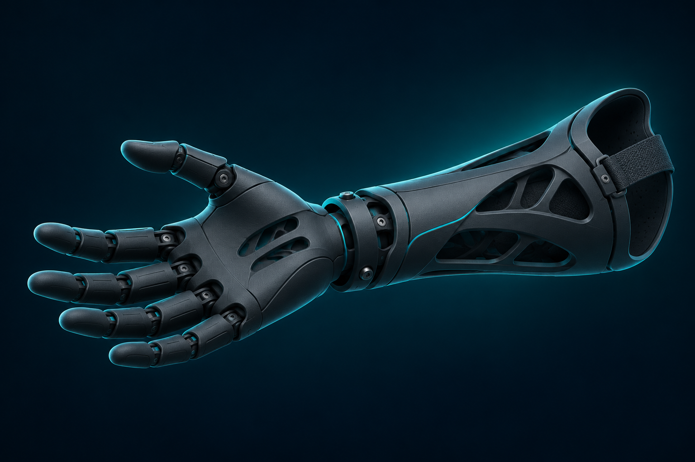
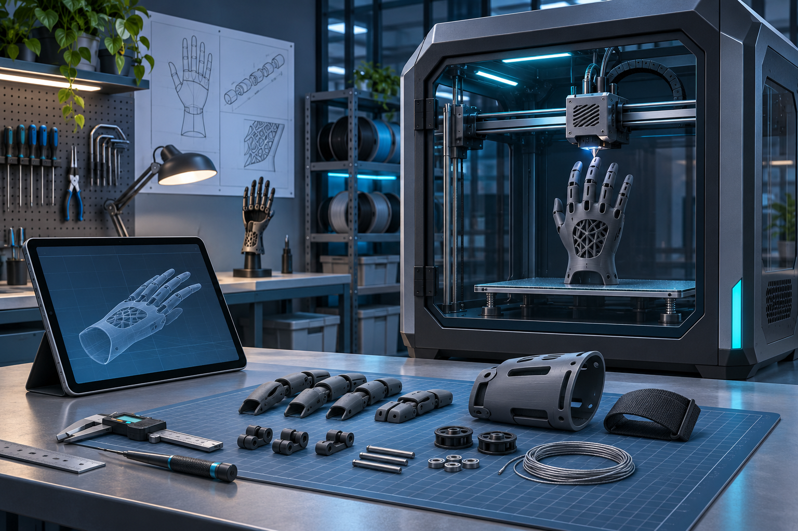

Impresión 3D
La fabricación aditiva convertiría el modelo digital en piezas físicas, capa a capa.
Ejemplo NewLife. Imprimir una carcasa de prueba adaptada a las medidas del caso y cambiar solo esa pieza al revisar el diseño.
NewLife 3D es una propuesta de diseño personalizado y fabricación aditiva de prótesis. Una idea que une tecnología, personas y una forma más consciente de producir.

Las necesidades y medidas de cada persona son distintas. Nuestra idea: imaginar un proceso de diseño de prótesis de mano que parta de sus características concretas, con fabricación bajo demanda.
El ejemplo central es una prótesis de mano personalizada, presentada aquí como concepto de diseño. La web muestra cómo podría pasar de un modelo digital a un prototipo físico.
Primero se recogerían las medidas y necesidades con un profesional cualificado. Después se diseñaría un modelo digital, se prepararía su fabricación y se evaluaría el prototipo antes de cualquier aplicación real.
Objetivo: ajustar la geometría al caso y facilitar nuevas versiones frente a un proceso basado en moldes físicos. Las mejoras de ajuste tendrían que comprobarse.
Revisar el diseño en pantalla antes de fabricar una nueva versión.
Fabricar cuando exista una necesidad definida, con control de material y residuos.
Medidas y diseño CAD → archivo compartido en la nube → impresión 3D → ensayos conectados mediante IoT. La IA apoyaría la revisión de variantes durante el diseño.

Definir el caso y recopilar medidas con supervisión profesional.
Crear y revisar un modelo digital adaptado a los requisitos.
Imprimir una versión de prueba por capas y comprobar el acabado.
Recoger observaciones, modificar el diseño y validar lo necesario.
Cuatro tecnologías del tema, conectadas a un mismo proceso: diseñar, fabricar y revisar un prototipo personalizado de mano.
La fabricación aditiva convertiría el modelo digital en piezas físicas, capa a capa.
Ejemplo NewLife. Imprimir una carcasa de prueba adaptada a las medidas del caso y cambiar solo esa pieza al revisar el diseño.
Apoyaría la comparación de variantes de diseño según restricciones definidas por el equipo técnico.
Ejemplo NewLife. Proponer distintas geometrías internas para una carcasa más ligera. El equipo revisaría las propuestas mediante simulaciones y ensayos; la IA no validaría su seguridad.
Conectaría sensores del banco de pruebas a una aplicación para consultar sus mediciones.
Ejemplo NewLife. Enviar por red los datos de fuerza y ciclos de apertura de un prototipo a un panel, para detectar comportamientos que necesiten revisión.
Permitiría almacenar modelos y colaborar sobre versiones del diseño con acceso autorizado.
Ejemplo NewLife. El técnico subiría la versión 02 y el centro colaborador dejaría observaciones antes de aprobar la siguiente impresión de prueba.
Selección basada en el apartado 1 de los apuntes (págs. 1–3). Los ejemplos son propuestas propias para NewLife, no funciones de un producto existente. La protección de datos y de equipos sería transversal a las cuatro tecnologías.
Reducir material, prolongar la vida de las piezas y medir el consumo desde el primer prototipo.
Modelo elegido: producción JIT, bajo demanda. Fabricar tras definir cada encargo limitaría el stock de piezas que quizá no se utilicen. Se complementaría con ecodiseño y extensión de la vida del producto mediante componentes reparables.
Aplicación de los modelos del apartado 3 de los apuntes. El ahorro ambiental tendría que medirse; imprimir en 3D no implica por sí solo un impacto menor.
Revisar geometrías en digital y preparar la orientación de impresión para limitar soportes y pruebas fallidas. La IA apoyaría la comparación de alternativas.
Diseñar carcasas y módulos reemplazables para estudiar la sustitución de una pieza dañada. La impresión 3D permitiría fabricar ese repuesto, sujeto a evaluación técnica.
Clasificar restos limpios de prototipado por material y derivarlos a un gestor adecuado. Estudiar su reutilización en maquetas sin uso clínico, sin asumir que todo residuo sea reciclable.
Usar mediciones IoT de consumo y registros en la nube para comparar kWh por pieza, reducir tiempos de espera y elegir ajustes de impresión eficientes.
El diseño digital y la impresión 3D abrirían una oportunidad de servicio: conservar y actualizar modelos personalizados para preparar nuevos prototipos o repuestos sin empezar cada diseño desde cero.
La digitalización crea la necesidad de gestionar versiones, permisos y cambios del modelo a lo largo del tiempo.
Referencias para estudiar la competencia: Open Bionics (Hero Arm) y Ottobock (bebionic). Son empresas del ámbito protésico; su oferta no equivale a nuestro concepto de clase.
NewLife buscaría diferenciarse mediante colaboración cercana en Granada, documentación de cada ajuste y diseño modular. Son objetivos por contrastar, sin afirmar ventajas de precio, calidad o eficacia frente a productos existentes.
Dos tecnologías de la lista de THD emergentes del apartado 5 de los apuntes. Las aplicaciones siguientes son hipótesis de investigación para NewLife.
En qué consisten. Materiales con propiedades específicas, como resistencia, ligereza o respuesta a cambios externos.
Aplicación propuesta. Investigar un módulo de prueba con un material cuya rigidez pueda variar en zonas concretas, para estudiar distintos comportamientos sin fabricar una pieza completa por cada variante.
Ventaja buscada. Explorar un equilibrio entre flexibilidad y soporte. La viabilidad, durabilidad y compatibilidad tendrían que ensayarse.
En qué consiste. Miniaturizar componentes electrónicos para integrar sensores y procesamiento en menos espacio.
Aplicación propuesta. Investigar una matriz de microsensores integrada en la carcasa de prueba que registre cómo se reparten las cargas durante ensayos controlados.
Ventaja buscada. Obtener mediciones en más puntos con menos volumen añadido, para orientar ajustes del prototipo.
Fuente conceptual: apuntes, págs. 15–16. No se afirma que estas ideas sean inéditas ni que su uso sea minoritario en el sector: esa parte de la actividad requiere una revisión específica del estado de la técnica.
NewLife 3D propone unir diseño personalizado, fabricación digital y una mirada sostenible. Este proyecto de clase es el primer paso para estudiar si la idea puede llevarse a la práctica.
Volver al inicio ↑← → para avanzar · Esc para salir